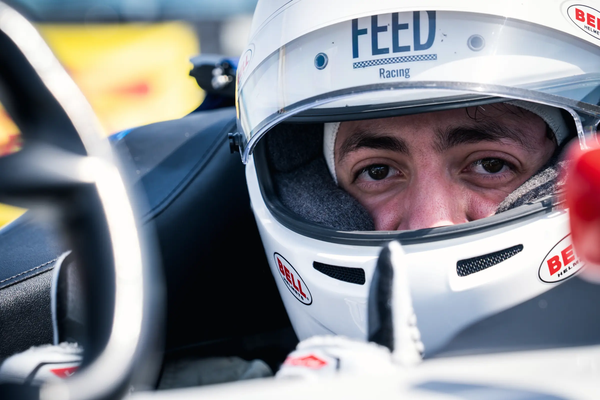
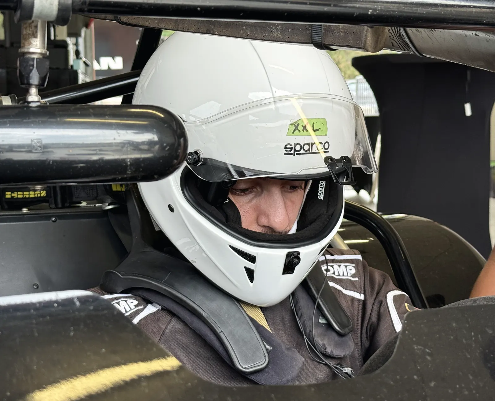
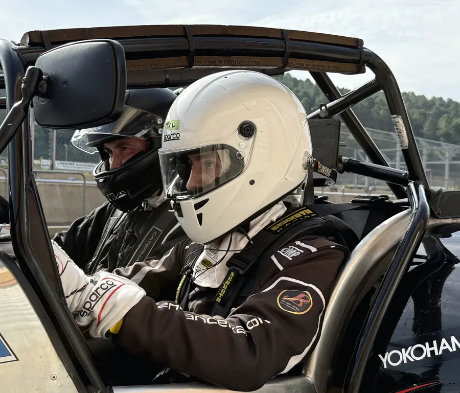
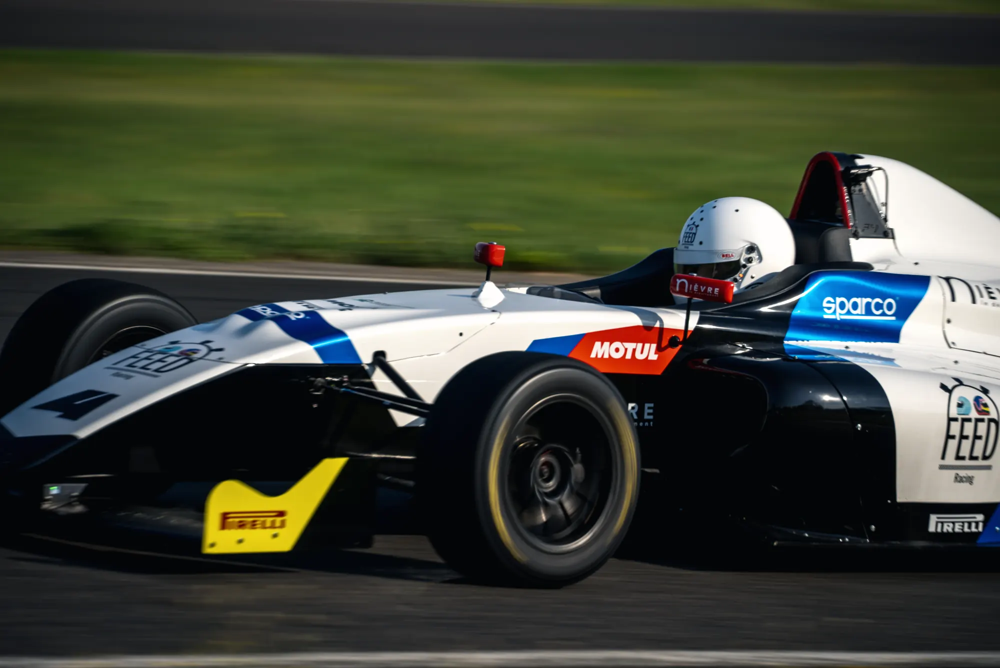
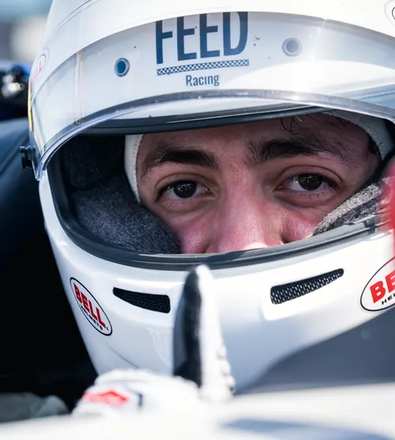
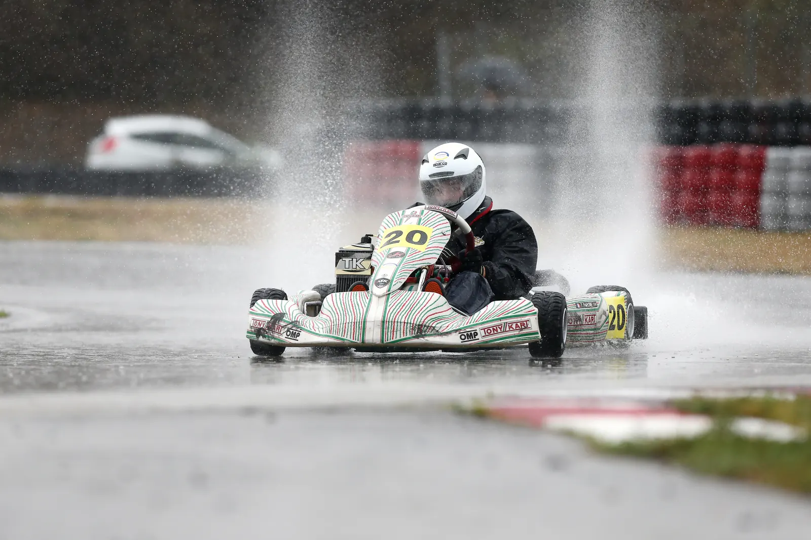
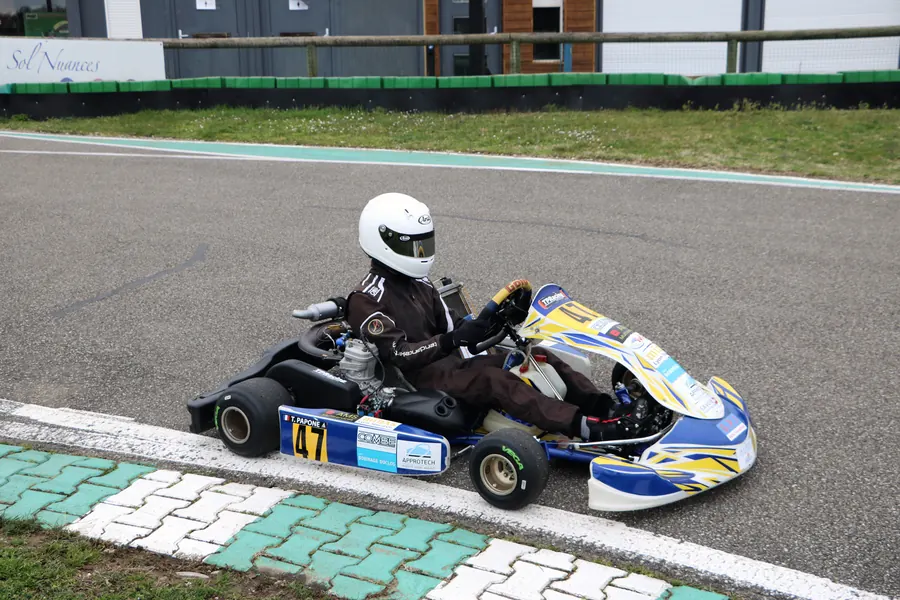
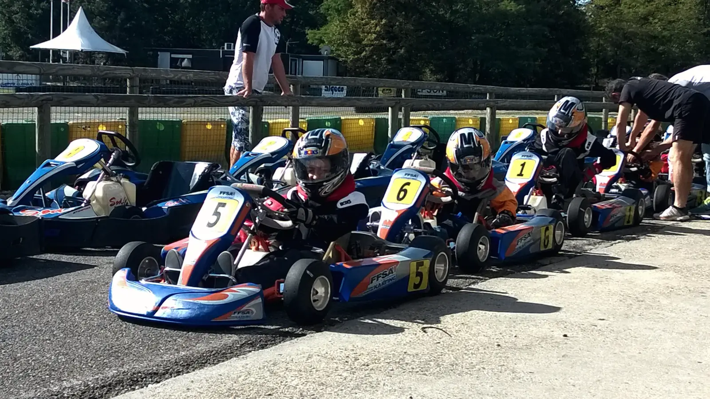

Thomas
Papone
Entraînements, courses et coulisses du projet : @thomaspaponeracing sur tous les réseaux.
Le parcours
Du plus récent au plus ancien. Chaque étape recouvre la précédente, comme on remonte le temps.


Test Caterham Academy
Premier roulage en Caterham, la voiture de la saison à venir.

Préparer la Caterham
Les circuits de la coupe, la boîte en H, la régularité sur les courses longues.


FEED Racing, Volant 2024
L'école de pilotage monoplace, sur la piste club.


Karting de compétition
Trois saisons de ligue, du sec à la pluie, jusqu'en 2022, puis le Gold Kart aux couleurs des partenaires.

Les premiers tours
Le Volant Bronze, en août 2015.


Tout a commencé en 1987
Avant Thomas, il y a eu Patrice, au Championnat de France de karting puis en Formule Ford. L'histoire de l'association est sur la page d'accueil.
Le volant se transmetSur Instagram
Les derniers posts


La suite s'écrit maintenant
Partenaires, passionnés, curieux : le projet avance et tout se partage. Rejoignez l'aventure avant l'entrée en championnat.
Devenir partenaire